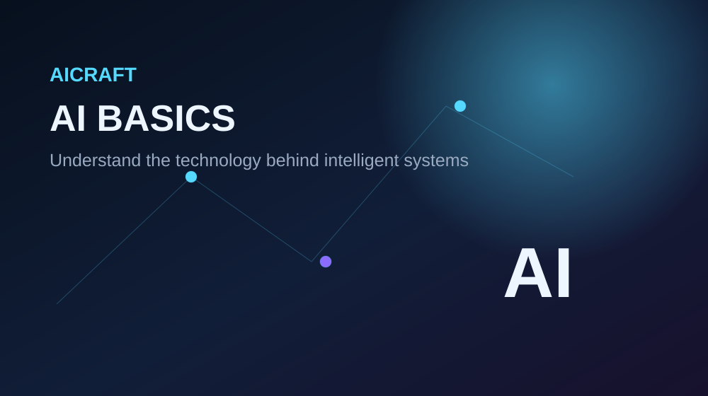

🧠
Artificial Intelligence
AI describes the broad field of building systems that can perform tasks requiring capabilities such as perception, reasoning or language understanding.
Artificial Intelligence is a field of computing that focuses on systems capable of performing tasks associated with human intelligence, such as recognizing patterns, understanding language and making predictions.

AI describes the broad field of building systems that can perform tasks requiring capabilities such as perception, reasoning or language understanding.
Machine learning is an approach where systems learn patterns from data to make predictions or decisions rather than relying only on manually written rules.
Computer vision deals with extracting useful information from images and video, such as identifying objects or classifying images.